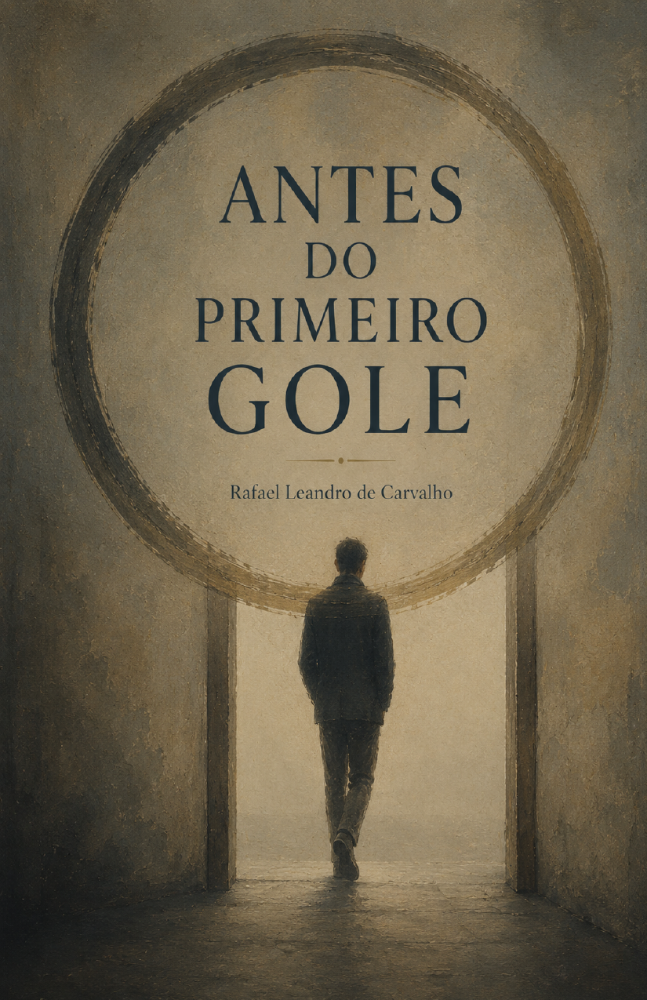
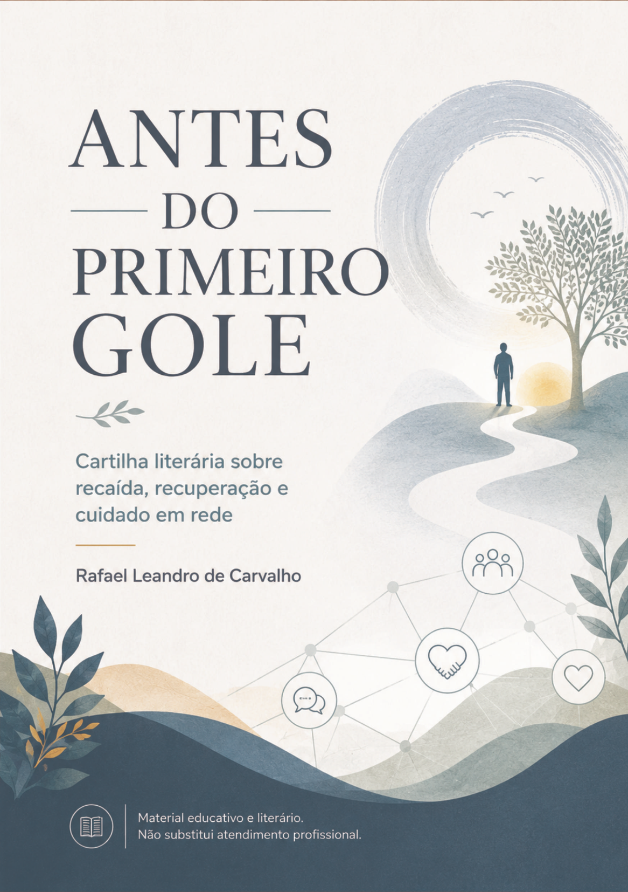
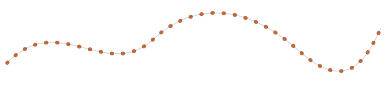
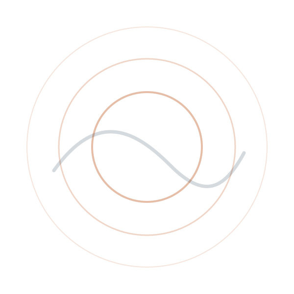

Experiência vivida
Narrativa construída a partir de uma trajetória real de sofrimento, cuidado e reconstrução.
Projeto autoral em desenvolvimento Goiânia/GO
Literatura, experiência vivida e cuidado em rede.
Um livro e uma cartilha sobre os sinais, os silêncios e os caminhos possíveis antes que a recaída aconteça.
“A recaída não começa no copo. Ela começa antes.”
No silêncio, no isolamento, na ansiedade, na quebra da rotina e na dificuldade de pedir ajuda.



Origem e propósito
Antes do Primeiro Gole nasceu da experiência vivida de Rafael Leandro de Carvalho como usuário da Rede de Atenção Psicossocial. O projeto utiliza literatura autobiográfica, educação popular e diálogo comunitário para refletir sobre recaída, recuperação, pedido de ajuda, cuidado em liberdade e construção de redes de apoio.
O conteúdo não apresenta respostas fáceis nem substitui acompanhamento profissional. Ele procura criar linguagem, identificação e espaço para conversas que frequentemente não acontecem.
Narrativa construída a partir de uma trajetória real de sofrimento, cuidado e reconstrução.
A escrita como forma de elaborar experiências, romper silêncios e aproximar pessoas.
Conhecimento construído por meio de escuta, diálogo e troca entre diferentes saberes.
Duas obras, uma mesma pergunta
O livro registra a experiência em profundidade. A cartilha transforma parte dessa reflexão em linguagem acessível para encontros, formação e circulação comunitária.
Antes do Primeiro Gole é uma narrativa autobiográfica sobre dependência de álcool, sofrimento psíquico, recaídas, abstinência e cuidado na Rede de Atenção Psicossocial.
A obra registra conflitos, perdas, tentativas de reconstrução e a importância de reconhecer os sinais que aparecem antes do uso.
“Antes do primeiro gole, já havia uma história acontecendo dentro de mim.”
A cartilha transforma elementos da experiência vivida em uma linguagem acessível para rodas de conversa, ações culturais e atividades de educação popular.
Ela aborda sinais de risco, rede de apoio, pedido de ajuda, recaída, cuidado em liberdade e construção de estratégias pessoais de proteção.
Literatura em circulação
O projeto propõe aproximar literatura, experiência vivida, saúde mental e participação comunitária. A obra poderá circular em espaços culturais, universidades, movimentos sociais, projetos comunitários, atividades de formação e ações de educação popular.
Metas pretendidas
As ações serão realizadas somente quando houver condições técnicas, institucionais e financeiras adequadas.
Encontros possíveis
Formatos adaptáveis ao contexto de cada espaço, sempre com linguagem responsável, participação voluntária e respeito aos limites de cada pessoa.
Leitura de trechos do livro e diálogo sobre experiência, recaída, reconstrução e cuidado.
Atividade mediada com perguntas, leitura e construção coletiva de estratégias de apoio.
Conversa sobre literatura autobiográfica, SUS, saúde mental e transformação da experiência em produção cultural.
Atividade para estimular participantes a registrar trajetórias, lembranças e experiências sem exposição obrigatória.
Públicos possíveis

Construção em rede
O projeto está aberto ao diálogo com universidades, instituições culturais, pesquisadores, movimentos sociais, serviços públicos, organizações comunitárias, editoras e apoiadores comprometidos com literatura, educação popular e saúde mental.
Nenhuma instituição é apresentada neste site como apoiadora sem confirmação formal. Propostas podem envolver avaliação, circulação, impressão, formação, pesquisa ou financiamento por instrumento adequado.
Informação responsável
O estágio de cada frente é apresentado sem antecipar resultados, recursos ou parcerias que ainda não estejam formalmente confirmados.
Em preparação para publicação.
Versão desenvolvida e aberta a avaliação.
Em busca de colaboração especializada.
Dependente de apoio ou financiamento.
Em planejamento.
Em articulação.
Propostas em elaboração ou análise, sem afirmação de aprovação antes do resultado formal.
Todas as informações sobre apoios, parcerias e financiamento serão atualizadas somente após confirmação documental.
Perguntas frequentes
Não. A cartilha é um material literário e educativo. Ela não substitui avaliação, atendimento ou acompanhamento realizado por profissionais e serviços de saúde.
Sim, mediante respeito à autoria, ao contexto do grupo e aos limites do material. A proposta pode ser adaptada em diálogo com a instituição e com pessoas qualificadas para a atividade.
Sim. Universidades, espaços culturais, movimentos, serviços e organizações podem entrar em contato para conhecer a proposta e avaliar uma atividade conjunta.
Ainda não. O livro está em preparação para publicação física. O site será atualizado quando houver canal oficial de compra.
O apoio pode ocorrer por parceria cultural, edital, patrocínio, compra institucional, cessão de serviços ou outra forma juridicamente adequada. Toda proposta deverá ser formalizada com clareza.
Pode ser discutida em pesquisa, ensino ou extensão mediante contato prévio, preservação da autoria e definição do uso pretendido.
O nome de Rafael Leandro de Carvalho deve ser mantido nos créditos. Reprodução, adaptação, impressão ou incorporação a projetos deve ser previamente autorizada e formalizada.
Contato profissional
Use o formulário para apresentar uma proposta, solicitar informações ou manifestar interesse no livro, na cartilha ou nas atividades.
Antes de publicar, substitua o e-mail e o número de WhatsApp indicados no arquivo script.js.